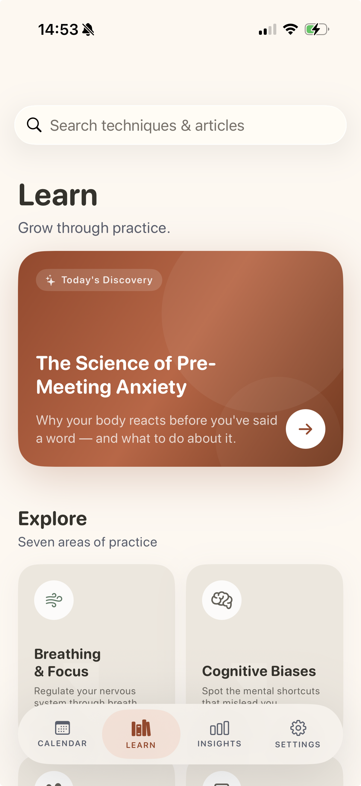
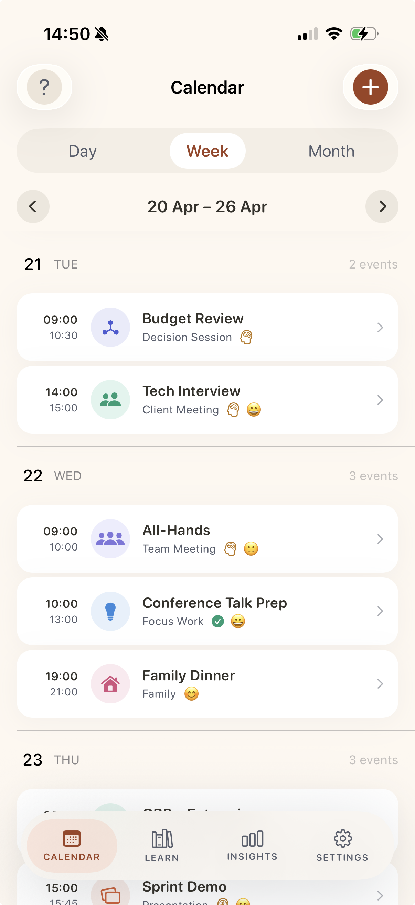
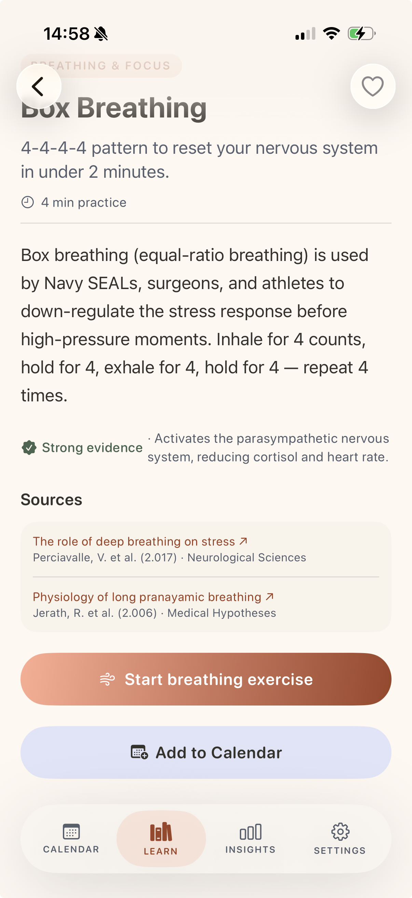
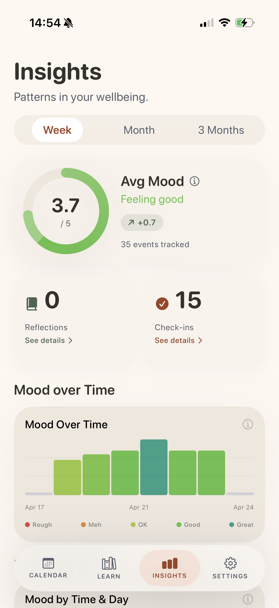

Think Cue connects to your calendar and delivers science-based psychological techniques exactly before each event — without adding another layer of noise to your day.


Four views. One purpose: make each day a little more prepared.


Most wellness apps want your time, your streaks, your attention. Think Cue wants none of that. It shows up precisely when relevant — and stays quiet the rest of the time.
Evidence shows psychological interventions are most effective when delivered in a context similar to the situation they prepare you for. A breathing technique before a stressful meeting lands differently than one learned at random.
The ABC model — Activating event, Belief, Consequence — is one of CBT's most powerful tools. Think Cue surfaces it precisely after an event, when reflection is natural and memory is fresh.
Streaks, badges and daily pressure create notification fatigue — backed by research. We don't push you. Insights emerge naturally from your calendar data. Knowledge is there when you reach for it.
Think Cue ships with its own calendar, so you can start using it immediately without connecting anything. If you prefer, connect your iOS Calendar in one tap — Think Cue will read upcoming events and automatically assign a psychological category and relevant technique. Add events directly in the app or in any app you already use — everything stays in sync.
Every technique and article is drawn from peer-reviewed research — CBT, ACT, mindfulness, stress inoculation, physiological regulation. Curated by practitioners, not algorithm alone.
AES-256 encryption. Journal stays on-device only. iCloud Keychain sync. No data ever sold.
Weekly and monthly reports on mood trends, stress by category, technique effectiveness — without manufactured urgency. Simple truth about your patterns.
Browse techniques and long-form articles. Add any technique directly to your calendar as a recurring practice — build mastery over time.
We used modern research tools and large-scale models during design and content curation, but the app you install does not call them at runtime. Every classification, recommendation, and insight is computed on-device using deterministic, auditable rules — because privacy beats convenience for the data that matters most.
After each event, reflect using the Activating Event → Belief → Consequence framework. Journal entries are encrypted and stored exclusively on your device. They never reach any server — ours or anyone else's.
Every technique, every insight, every recommendation traces back to peer-reviewed evidence. This is not wellness content — it is applied behavioural science.
Psychological data is among the most sensitive that exists. We engineered every layer of Think Cue around that fact — not as a feature, as a foundation.
All sensitive fields — event titles, mood check-ins, survey answers — encrypted before leaving your device. The key lives in your iCloud Keychain, end-to-end encrypted by Apple.
ABC journal entries are stored exclusively in secure local storage on your iPhone. They are never synced to any server or cloud service — no way for anyone, including us, to read them. Entries are AES-256 encrypted at rest, so even standard device backups contain only unreadable ciphertext.
The app does not call third-party model APIs at runtime. There is no inference pipeline, no prompt logging, no external recommendation service. Classification and personalisation run entirely on your device using rules you can read.
Download all your data as JSON or delete your account — all Firestore collections purged server-side within seconds. You are always in control.
Four moments where preparation changes the outcome. Each one familiar. Each one better with thirty seconds of science.
It's 09:45. You've been in back-to-back calls since 8am. A major client presents a new brief in fifteen minutes and your mind is still replaying the last meeting's tension. You feel rushed and not quite present.
Last week someone challenged your idea publicly and you're still carrying the sting. You want to contribute openly but notice yourself already preparing defensive responses instead of genuinely listening.
You've blocked two hours for deep work. But you checked Slack at 8:55 and three threads are running in your head. The block starts in five minutes and you're already fragmented, attention flickering.
A significant hiring decision. You've narrowed it to two candidates and you have a strong gut favourite. But you've been in meetings since 10am and you notice you're drawn to the simpler choice, not necessarily the right one. You're not sure if it's judgement or fatigue talking.
Think Cue is the product of curating decades of behavioural science into something practical. These are the domains — and the studies — that shaped every design decision.
Events are classified into one of 8 categories: Meeting, Communication, Focus, Decision, Learning, Administrative, Personal, and Wellbeing.
A rule-based engine matches event title keywords against category patterns. Words like "standup", "sync", "review" match Communication; "write", "code", "design" match Focus; "decide", "vote" match Decision. Runs entirely on-device with no network calls.
Each technique has a set of event categories it is relevant to, plus a type tag (breathing, mindfulness, cognitive, physical, journaling, or planning).
Techniques are filtered by matching event category, then re-ranked on-device by your survey preferences (learning style, prior experience). Back-to-back events prioritise quick (≤5 min) techniques. The matching logic is deterministic and runs locally — no model inference, no network calls.
The notification is delivered 15 minutes before the event, or 30 minutes for longer (>1 hour) events.
The SurveyPersonalisation engine scores every bundled technique against your survey answers using a deterministic, additive algorithm. Signals include primary goal match, stress trigger overlap, learning preference, prior experience level, and work context. Techniques are ranked by score and sliced to a display limit (default 6); ties are broken by duration — shorter first for busy-day users. The full scoring logic is documented and auditable on request.
Average mood: Mean of all check-in ratings (1–5) in the selected period.
Stress by category: For each event category, average the stress rating from post-event check-ins. Highest average is flagged "most stressful category."
Technique effectiveness: For each technique, count helpful marks vs. total uses. helpfulRate = helpfulCount / timesUsed. Minimum 3 uses before appearing in rankings.
Mood trend: Linear regression across the period. "Improving", "declining", or "stable" based on slope (>0.2/day = improving, <−0.2 = declining).
Mood heatmap: Events grouped by day-of-week and time slot (morning / afternoon / evening). Each cell shows average mood for check-ins in that slot.
Survey personalisation: If you have survey data, the scoring engine ranks eligible articles and picks the highest-scoring one appropriate for today's slot, rather than purely sequential rotation.
Based on Aaron Beck's cognitive model and Albert Ellis's REBT. After each event you record:
A — Activating Event: What specifically happened? (facts only)
B — Belief: What did you tell yourself in that moment?
C — Consequence: What did you feel and do as a result?
An optional fourth field records an alternative thought — a more balanced interpretation.
Storage: Entries are stored exclusively in secure local storage on your iPhone, encrypted with AES-256-GCM. They are never synced to any server, never included in any API call. Standard device backups (iCloud Backup) may contain the encrypted file, but without your iCloud Keychain key it is unreadable ciphertext. Deleting your account also wipes the local journal from your device.
Think Cue uses AES-256-GCM (authenticated encryption — any tampering with ciphertext is detectable). A 256-bit symmetric key is generated on first launch and stored in your iCloud Keychain. This means the key is:
· End-to-end encrypted by Apple before leaving your device
· Automatically synced to all your Apple devices via iCloud Keychain
· Restored automatically on reinstall if iCloud is signed in
· Never visible to Think Cue or any third party
Journal entries do not sync across devices by design — privacy over convenience for the most sensitive data.
Every technique, article, and recommendation in Think Cue traces back to peer-reviewed research. Below is the full list of studies reviewed, formatted in APA 7th edition style. This list is updated as new evidence is incorporated.
Acciarini, C., Brunetta, F., & Bonfiglioli, R. (2020). Cognitive biases and decision-making strategies in times of change: A systematic literature review. Management Decision, 59(3), 638–652.
Balban, M. Y., Neri, E., Kogon, M. M., Weed, L., Nourber, B., Jo, B., Holl, G., Zeitzer, J. M., Spiegel, D., & Huberman, A. D. (2023). Brief structured respiration practices enhance mood and reduce physiological arousal. Cell Reports Medicine, 4(1), 100895.
Bentley, T. G. K., D'Andrea-Penna, G., Rakic, M., Arce, N., LaFaille, M., Berman, R., Cooley, K., & Sprimont, P. (2023). Breathing practices for stress and anxiety reduction: Conceptual framework of implementation guidelines based on a systematic review of the published literature. Brain Sciences, 13(12), 1612.
Birdee, G. S., Cai, H., Bauer, B. A., Sohl, S. J., Mathieu-Bolh, N., & Gould, M. (2023). A randomized controlled trial of a breathing intervention to promote slow breathing adherence and assess the impact on anxiety symptoms. Complementary Therapies in Medicine, 75, 102959.
Blumenthal-Barby, J. S., & Krieger, H. (2015). Cognitive biases and heuristics in medical decision making: A critical review using a systematic search strategy. Medical Decision Making, 35(4), 539–557.
Chen, B., Yang, T., Xiao, L., Xu, C., & Zhu, C. (2023). Effects of mobile mindfulness meditation on the mental health of university students: Systematic review and meta-analysis. Journal of Medical Internet Research, 25, e39128.
Daros, A. R., Daniel, K. E., Engel, R. A., & Ehrenreich-May, J. (2021). A meta-analysis of emotional regulation outcomes in psychological interventions for youth with depression and anxiety. Nature Human Behaviour, 5(10), 1443–1457.
Demir, S., & Ercan, F. (2022). The effectiveness of cognitive behavioral therapy-based group counseling on depressive symptomatology, anxiety levels, automatic thoughts, and coping ways: A randomized controlled trial. Perspectives in Psychiatric Care, 58(4), 2478–2487.
Economides, M., Martman, J., Saunders, M. J., & Cavanagh, K. (2018). Improvements in stress, affect, and irritability following brief use of a mindfulness-based smartphone app: A randomized controlled trial. Mindfulness, 9(5), 1584–1593.
Fincham, G. W., Strauss, C., Montero-Marin, J., & Cavanagh, K. (2023). Effect of breathwork on stress and mental health: A meta-analysis of randomised-controlled trials. Scientific Reports, 13, 432.
Flett, J. A. M., Hayne, H., Riordan, B. C., Thompson, L. M., & Conner, T. S. (2018). Mobile mindfulness meditation: A randomised controlled trial of the effect of two popular apps on mental health. Mindfulness, 10(5), 863–876.
Fuhrmann, L. M., Ebert, D. D., & Harrer, M. (2025). Evaluating a brief smartphone-based stress management intervention with heart rate biofeedback from built-in sensors in a three arm randomized controlled trial. Scientific Reports, 15, 21472.
Godden, D. R., & Baddeley, A. D. (1975). Context-dependent memory in two natural environments: On land and underwater. British Journal of Psychology, 66(3), 325–331.
Goldberg, S. B., Imhoff-Smith, T., Bolt, D. M., Wilson-Mendenhall, C. D., Dahl, C. J., Davidson, R. J., & Rosenkranz, M. A. (2020). Testing the efficacy of a multicomponent, self-guided, smartphone-based meditation app: Three-armed randomized controlled trial. JMIR Mental Health, 7(11), e23825.
Hofmann, S. G., Asnaani, A., Vonk, I. J. J., Sawyer, A. T., & Fang, A. (2012). The efficacy of cognitive behavioral therapy: A review of meta-analyses. Cognitive Therapy and Research, 36(5), 427–440.
Hülsheger, U. R., Alberts, H. J. E. M., Feinholdt, A., & Lang, J. W. B. (2013). Benefits of mindfulness at work: The role of mindfulness in emotion regulation, emotional exhaustion, and job satisfaction. Journal of Applied Psychology, 98(2), 310–325.
King, D. L., Delfabbro, P. H., Billieux, J., & Potenza, M. N. (2024). A systematic review of the nature and efficacy of Rational Emotive Behaviour Therapy interventions. PLOS ONE, 19(7), e0306835.
Lehrer, P., Kaur, K., Sharma, A., Shah, K., Huseby, R., Bhavsar, J., & Zhang, Y. (2020). Heart rate variability biofeedback improves emotional and physical health and performance: A systematic review and meta-analysis. Applied Psychophysiology and Biofeedback, 45(3), 109–129.
Longmire, N. H., & Harrison, D. A. (2018). Seeing their side versus feeling their pain: Differential consequences of perspective-taking and empathy at work. Journal of Applied Psychology, 103(8), 894–915.
Ludolph, R., & Schulz, P. J. (2018). Debiasing health-related judgments and decision making: A systematic review. Medical Decision Making, 38(1), 3–13.
Ma, X., Yue, Z.-Q., Gong, Z.-Q., Zhang, H., Duan, N.-Y., Shi, Y.-T., Wei, G.-X., & Li, Y.-F. (2017). The effect of diaphragmatic breathing on attention, negative affect and stress in healthy adults. Frontiers in Psychology, 8, 874.
Merla, I., Gabbert, F., & Scott, A. J. (2025). Interventions to reduce implicit bias in high-stakes professional judgements: A systematic review. Behavioral Sciences, 15(11), 1592.
O'Daffer, A., Colt, S. F., Wasil, A. R., & Luo, A. (2022). Efficacy and mechanisms of digital mindfulness interventions: A systematic review and meta-analysis. JMIR Mental Health, 9(4), e36631.
Pilcher, J. J., Baker, V. C., & Roll, J. D. (2025). Brief slow-paced breathing improves working memory, mood, and stress in college students. Anxiety, Stress, & Coping, 38(5), 528–543.
Pop, G. V., Szentágotai-Tătar, A., & Visu-Petra, L. (2025). Anger and emotion regulation strategies: A meta-analysis. Scientific Reports, 15, 6491.
Raugh, I. M., Berglund, A. M., & Strauss, G. P. (2024). Implementation of mindfulness-based emotion regulation strategies: A systematic review and meta-analysis. Affective Science, 5(4), 330–345.
Sætrevik, B., Granerud, T., Nijhof, M., & Sandvik, A. (2025). Tactical breathing enhances police performance in a critical incident simulation. Collabra: Psychology, 11(1), 144527.
Sakiris, N., & Berle, D. (2019). A systematic review and meta-analysis of the Unified Protocol as a transdiagnostic emotion regulation based intervention. Clinical Psychology Review, 72, 101751.
Shao, D., Zhang, H.-H., Long, Z.-T., & Li, J. (2024). The effect of slow-paced breathing on cardiovascular and emotion functions: A meta-analysis and systematic review. Mindfulness, 15(1), 61–88.
Sohal, M., Singh, P., Dhillon, B. S., & Gill, H. S. (2022). Efficacy of journaling in the management of mental illness: A systematic review and meta-analysis. Family Medicine and Community Health, 10(1), e001154.
Swaryandini, G., Graham, J., Griffith, S., Oswald, F. L., Costello, T. H., & Pennycook, G. (2025). Systematic review and meta-analysis of educational approaches to reduce cognitive biases among students. Nature Human Behaviour, 9(12), 2510–2538.
Toet, A., Bijlsma, M. J., & van Erp, J. B. F. (2021). "Now you see it, now you don't"—Retention and transfer of cognitive bias mitigation interventions: A systematic literature study. Frontiers in Psychology, 12, 629354.
Van der Linden, D., Frese, M., & Meijman, T. F. (2003). Mental fatigue and the control of cognitive processes: Effects on perseveration and planning. Acta Psychologica, 113(1), 45–65.
Visted, E., Vøllestad, J., Nielsen, M. B., & Schanche, E. (2018). Emotion regulation in current and remitted depression: A systematic review and meta-analysis. Frontiers in Psychology, 9, 756.
Warsitzka, M., Zhang, H., Beersma, B., Freund, P. A., & Trötschel, R. (2024). Expanding the pie or spoiling the cake? How the number of negotiation issues affects integrative bargaining. Journal of Applied Psychology, 109(8), 1224–1249.
Whelehan, D. F., Conlon, K. C., & Ridgway, P. F. (2020). Medicine and heuristics: Cognitive biases and medical decision-making. Irish Journal of Medical Science, 189(4), 1477–1484.
Zhang, D., Lee, E. K. P., Mak, E. C. W., Ho, C. Y., & Wong, S. Y. S. (2021). Mindfulness-based interventions: An overall review. British Medical Bulletin, 138(1), 41–57.
Total: 37 peer-reviewed references. Last verified: April 2026.
The core app is free — calendar sync, all techniques, the ABC journal, insights, and the full article library.
Think Cue is a personal project built out of genuine interest in applying behavioural science to everyday professional life.
Think Cue is a one-person project. Every message is read personally. Whether you have a research suggestion, a bug report, or just want to talk about behavioural science — I'd like to hear from you.